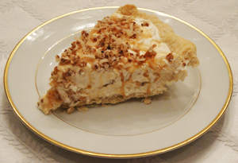

Caramel Coconut Pie
This is one of our most requested desserts. It is simple, elegant, and refreshing. It is easy to make in advance, because you keep it frozen until just before serving. It makes two pies — one to eat and one to give away!
Ingredients:
- ¼ cup butter
- 7 oz. dried coconut
- ½ cup chopped pecans
- 1 package (8 oz.) cream cheese, softened
- 1 can (14 oz.) sweetened condensed milk
- 1 container (16 oz.) whipped topping, thawed
- 1 jar (12 oz.) caramel ice cream topping
- 2 pie shells (9 in.), baked
Directions:
Melt butter in large skillet. Add coconut & pecans; cook until golden brown, stirring frequently. Set aside. Combine cream cheese & milk. Beat until smooth, then fold in whipped topping. Layer ¼ of cream cheese mixture into each pie shell. Drizzle ¼ of caramel topping on each pie. Sprinkle ¼ of coconut & pecan mixture evenly on each pie. Repeat layers. Cover & freeze until firm. Let stand at room temperature for 5 minutes before serving.
This recipe was contributed by Cosie Simmons.